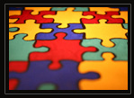

Awareness to early detection and treatment of breast cancer and uterus problems |
Awareness creation on gender equality girl child protection, literacy, hygiene economic independent and self reliance, women’s rights, women’s participation in all walks of life etc. |
"Awareness in every field is needed. Awareness is a question that needs to be answered in every field. Legal awareness is needed in this area so the officials have organised a legal awareness camp in this area," The failure of execution of many laws has been attributed to the beneficiaries' lack of awareness. Therefore an emergent need was felt for generating awareness of rights as knowledge is the central focus and is a source of power. Indian civil marriage act, dowry, property child marriage, widow re-marriage. |
Our Medical Camp enables us to provide support and assistance to health related problems. We initiate in enlightening people the benefits to remain healthy and fit. Besides, we conduct training programs that educate people living a life in hygienic conditions. This help in increasing life expectancy rate and reduces many casualty. |
We organize Blood Donation Camp time to time to save human lives and eliminate health problems emerging due to blood shortage. We understand that blood is the life of a person, therefore, we bring forth adequate resources that make different blood group available under one roof. Besides, we conduct these camps in rural and urban areas, so that backward and under privileged people get favorable circumstances |
Tribals/Adivasi are the best-known indigenous (Mulnivasi) population of ancient India. Their culture & art represent a very colourful and vivid social and cultural heritage of the country that is persisting from pre-historic times until this day inspite many vicissitudes. In the wake of globalization and modernization the tribal communities in postmodern India, which are nearly 500 of them, were able to retain their age-old cultures and art successfully and consistently. They have also contributed significantly their share in the composite culture of India, which is called today Indian Culture. The tribal history, culture, art, and all the varied aspects of their folklore though attract each year to the tribal regions, tourists, scholars, media persons, art historians both from India and abroad in large number even though their history is concealed in the mist of time. Much is being done by the Government of India and State Government to preserve and promote the valuable tribal cultural heritage of India but genuinely a lot remains to be done. |
In rural areas Le Consal Bountiful Trust has organized several camps for women and children. Through these camps group discussions were organized for women to gain knowledge in development of their village for a better planning and living and taught how to respect the elders and to support them by taking special care of them. To have a clean and neat environment in rural areas the villagers were advised to take up, Tree plantation and Kitchen gardens as two simple models. A Water & Sanitation also forms part of a healthy environment, the trust has taken efforts in collaboration with government agencies to construct the water tanks and wells for providing safe drinking water to the rural people. |

Awareness and Animation programs

Women have always been marginalized and relegated to the status of subjugated class in the Indian society. Due to lack ofspecific implementation of plans, local communities especially women have remained outside the scope and benefits of government schemes and programmes.
Women have not actively participated in their emancipation due to their lack of economic independence and illiteracy. There is a need to address the issue by raising the status of women. The key lies in women empowerment through economic self- sufficiency and higher awareness levels on social, political and legal issues through mobilization.